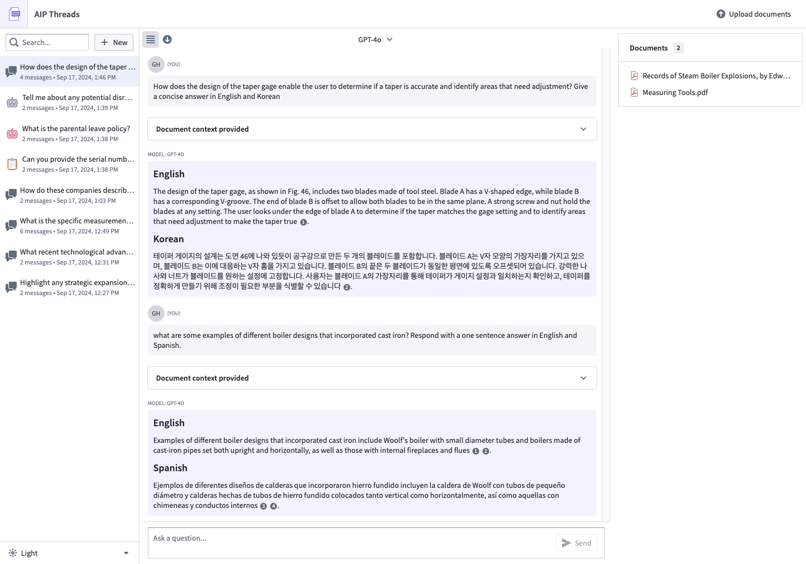

:::callout{theme="warning"} AIP Threads requires AIP and AIP custom workflows to be enabled. :::
AIP Threads is a general productivity tool for enterprise that enables users to accomplish a variety of tasks and ad-hoc analyses with the power of LLMs. As long as AIP custom workflows are enabled for your enrollment, no additional configuration or technical expertise is required to interact with documents (for example, PDFs) and AIP Chatbots (formerly AIP Agents) (interactive assistants equipped with enterprise-specific information and tools). To begin working with AIP Threads, simply drag and drop your documents into the interface, pick from previously uploaded documents that you have access to, or select an AIP Chatbot that you and your organization have created.

The document interaction capabilities of AIP Threads are excellent for quick, iterative, and cross-language analysis of PDFs in order to help users obtain specific answers, summaries, or comparisons:
For more repetitive and complex workflows, we encourage you to explore other AIP functionalities that might better suit your workflows.
AIP Threads uses third-party large language models (LLMs) to process queries, consistent with Palantir security standards. Be reminded to use this tool in accordance with your organization's policies.
Review Getting started to start interacting with your documents.